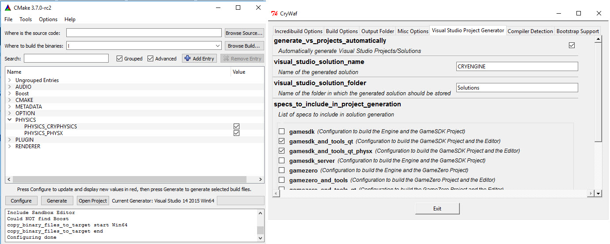

Обзор
NVIDIA PhysX — это масштабируемое мультиплатформенное решение для игровой физики, которое используется во многих популярных сегодня играх. В дополнение к встроенному физическому движку CRYENGINE (CryPhysics), эта функция позволяет пользователям CRYENGINE использовать NVIDIA сторонний физический движок (PhysX) в качестве внешнего физического движка в CRYENGINE.
Интеграция NVIDIA PhysX является минимально-инверсивным. По сути, интерфейс CryPhysics IPhysicalWorld был реализован для PhysX вместо физического движка. Код интерфейса PhysX можно найти в ../Код/CryEngine/CryPhysicsSystem/CryPhysX/. Интерфейс можно скомпилировать с использованием систем сборки CMake и WAF..
Используя NVIDIA PhysX, есть возможность использования NVIDIA PhysX Визуальный отладчик (PVD). Это позволяет записывать и исследовать физику игрового мира, что может быть очень полезно. Вы также можете использовать основные функции визуальной отладки доступны непосредственно в CRYENGINE через p_draw_helpers команда в консоли.
Установка и включение PhysX в CRYENGINE
Выполните следующие действия, чтобы установить и включить PhysX в CRYENGINE:
- Установить NVIDIA PhysX SDK 3.3 (не поставляется с CRYENGINE, но доступен бесплатно на Нвидиа).
- Скомпилируйте CRYENGINE с включенным PhysX (поддерживается в CMake и WAF). Это создаст интерфейс PhysX в CryPhysX.dll.
Рис1: Использование CMake и WAF для сборки PhysX.
- Убедитесь, что следующее PhysX-dll может быть найден CRYENGINE, либо изменив переменные пути к системной среде, либо скопировав следующую PhysX-dll в папку bin:
- nvToolsExt64_1.dll
- PhysX3*_x64.dll
- PhysX3CharacterKinematic*_x64.dll
- PhysX3Common*_x64.dll
- PhysX3Cooking*_x64.dll
- Добавьте следующие переменные в CRYENGINE system.cfg файл, это позволит CRYENGINE загрузиться NVIDIA PhysX вместо родного CryPhysics и отключите другие нереализованные функции:
p_physics_library = "CryPhysX"
e_OnDemandPhysics = 0
e_onDemandMaxSize = 999999
p_draw_helpers_num = 0
e_PhysOceanCell=0
CVar
CVar/Команда | Описание | Комментарий и примеры |
|---|---|---|
| g_MaxSimpleCollisions | Используется для ограничения количества событий столкновений твердых тел за кадр. | Работает только тогда, когда g_DisableCollisionDaamage активен (иначе важные для игры столкновения могут быть пропущены). Этот CVar полезен для профилирования, поскольку в противном случае затраты на обработку событий столкновения могут превысить стоимость моделирования, особенно если оно происходит синхронно в основном потоке. |
| p_draw_helpers | Поддерживает ограниченное подмножество CryPhysics помощники. | Любое значение, отличное от 0, включает помощники PhysX.
|
| p_draw_helpers_num | Указывает побитовую, числовую версию p_draw_helpers (см. выше). | |
| p_physics_library | Устанавливает physics.dll в system.cfg. | "CryPhysX" для PhysX, "CryPhysics" для CryPhysics. |
Ограничения
NVIDIA PhysX не поддерживает динамические вогнутые объекты (в отличие от CryPhysics). Существующие вогнутые прокси (например, транспортные средства) не добавляются в мир физики. Следовательно, прокси должны быть адаптированы к выпуклым, чтобы вести себя правильно.
Интерфейс PhysX на данный момент находится на стадии бета-тестирования. Св настоящее время, нНа данный момент поддерживаются не все функции CryPhysics. Есть несколько ограничений, которые описаны ниже:
- поддерживаются только 4-колесные транспортные средства.
- очень простое живое существо (но поскольку оно все равно обычно изменяется игровым кодом, это не является серьезным ограничением).
- отсутствие пересечения лучей с водными поверхностями.
- нет систем ломкости.
- отсутствие водных/воздушных зон.
- Моделирование веревки очень простое.
- окклюзия взрывов.
- ткань персонажа (но вы можете попробовать VCloth 2.0, функцию моделирования одежды CryEngine, которая явно реализует эту функцию).
Обратная связь
Поскольку это бета-функция, она все еще находится в разработке, и нам бы хотелось услышать, что вы о ней думаете. Пожалуйста, предоставьте нам любые отзывы, которые вы имеете через !